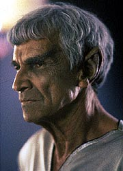
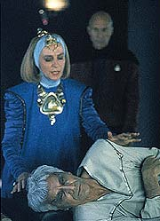
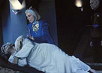
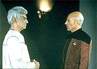

|
MANCHETE
DO EPISDIO
Histria
incrivelmente elaborada prepara
o terreno para a apario de Spock
Episdio
anterior | Prximo
episdio
Sinopse:
Data Estelar: 45236.4.
O capito Picard fica preocupado ao saber que o lendrio
embaixador Vulcano Spock partiu em uma misso no-autorizada ao
planeta Romulus, capital do Imprio Romulano. Ele imediatamente
viaja at Vulcano para conversar com Sarek, o pai de Spock. Sarek e
Picard ficaram muito prximos h um ano, quando fizeram um elo
mental.
 A
esposa de Sarek, Perrin, conta a Picard que a condio de seu
marido muito grave e confidencia detalhes da relao
conflituosa entre Spock e seu pai. Apesar da doena de Sarek,
Picard consegue conversar com ele. O Vulcano conta ao capito que
seu filho pode ter ido at Romulus conversar com Pardek, um senador
Romulano que Spock conheceu durante a conferncia de Khitomer.
Picard diz que ir atrs de Spock e Sarek, em seu leito de morte,
pede que o capito transmita seu amor ao filho. Enquanto isso, na
Enterprise, Riker e Geordi inspecionam diversos fragmentos metlicos,
identificados como de origem Vulcana, recuperados de uma nave
Ferengi acidentada. Quando os Vulcanos revelam no saber nada a
respeito, Riker e Geordi presumem que os Ferengis tenham roubado os
fragmentos.
Voltando Enterprise, Picard pede a ajuda dos Klingons na esperana
de obter uma nave equipada com camuflagem para a viagem at Romulus.
Aps vrios dias, Picard finalmente consegue transmitir seu pedido
a Gowron, que fornece a nave. Enquanto isso, Picard e Data conseguem
confirmar que Spock realmente est em contato com Pardek, um
senador que h dcadas advoga a paz e a reunificao entre
Romulanos e Vulcanos.
Disfarados como Romulanos, Picard e Data embarcam na nave Klingon
rumo a Romulus. Simultaneamente, a Enterprise chega em um
ferro-velho espacial, de onde os pedaos da nave Vulcana teriam
sido roubados.
 Durante
uma difcil noite a bordo da nave Klingon, Picard informado de
que Sarek morreu. Na Enterprise as coisas tambm no esto fceis.
Durante a investigao no ferro-velho, Riker encontra uma nave
responsvel pelo contrabando, mas ela se recusa a prestar qualquer
esclarecimento e acaba destruda aps entrar em confronto com a
Enterprise.
Picard e Data descem ao planeta e parte procura de Pardek, mas
quando esto para encontr-lo, so levados por guardas Romulanos.
Os oficiais os conduzem por um conjunto de cavernas, onde
revelado que eles no foram capturados pelo governo Romulano, mas
por uma faco rebelde liderada por Pardek. Enquanto Picard revela
sua misso a Pardek, Spock aparece diante de seus olhos.
Continua...
Comentrios:
A primeira parte
de "Unification" brilhante, e s ser superada
pela segunda parte porque a primeira metade s foi escrita com um
enorme "setup" para a segunda metade, a que Spock
realmente ter um papel preponderante.

incrvel como o roteiro trabalhado em todos os nveis, e a histria
assume um realismo incrvel. So encontradas citaes a eventos
ocorridos em diversos episdios. Nessa primeira parte, entram na
dana os fatos vistos em "Redemption",
durante a guerra civil Klingon, e "Sarek", duas
temporadas atrs, que marcou a primeira apario do pai de Spock
em A Nova Gerao.
Todas essas menes deixam o episdio mais complexo, verdade,
mas tambm fazem dele muito mais saboroso. Definitivamente, um
roteiro para presentear os fs --e funciona muito bem.
O equilbrio entre humor e drama perfeito. Data e Picard na nave
Klingon e o recadinho do capito para Gowron so momentos
maravilhosos no lado sarcstico. Em termos de drama, a cena entre
Picard e Sarek o ponto alto do episdio, e possivelmente um dos
momentos mais tocantes da srie. Sarek, prestes a morrer, declara
seu amor por Spock, apesar das desavenas entre os dois.
A atuao de Mark Lenard (cuja sade j estava de fato
debilitada pelo cncer que mataria o ator algum tempo depois)
fenomenal. A dificuldade de Sarek para fazer o tradicional
cumprimento Vulcano e as palavras desconexas misturadas aos momentos
de lucidez mostram a incrvel capacidade deste ator. Patrick
Stewart tambm consegue se envolver com a seqncia, tornando a
cena ainda mais bonita.
A trama como um todo tambm perfeita. Somos conduzidos ao longo
dos primeiros 45 minutos em uma "busca por Spock". Quando
o encontramos, ao final do episdio, j temos a certeza de que a
concluso promete. incrvel como, apesar de Leonard Nimoy
aparecer nesta primeira parte apenas em uma imagem congelada no prlogo
e na ltima cena, a histria j toda do Spock. Passamos quase
que o tempo todo ouvindo falar do clebre Vulcano. No poderia
haver preparao mais bem feita para a apario do personagem em
A Nova Gerao.
 Por
enquanto, as cartas esto na mesa, em duas histrias aparentemente
desconectadas --uma a bordo da Enterprise e outra em Romulus. Na
segunda parte, teremos o fechamento dos dois enredos, e o
afunilamento das duas tramas em um contexto mais amplo
simplesmente perfeito.
Sem dvida, "Unification" um dos episdios que
melhor explora as relaes polticas entre as diferentes "naes"
de Jornada nas Estrelas. Uma obra-prima.
Citaes:
Klim Dokachin -
"He probably figures that we don't get to see a lot of handsome
women out this way and someone like you might get a little more
cooperation from me. He's probably right."
("Ele provavelmente pensa que no costumamos ver mulheres
bonitas por aqui e que algum como voc teria mais cooperao de
mim. Ele provavelmente est certo.")
Trivia:
 Presena de Leonard Nimoy como Spock. Nimoy participou dos 79 episdios
da Srie Clssica, alm do primeiro episdio-piloto "The
Cage", apareceu em todos os seis filmes de cinema com o
elenco original e dirigiu dois deles, "Jornada nas Estrelas
III - Procura de Spock" e "Jornada nas Estrelas
IV - A Volta para Casa". Nimoy nasceu em 26/03/1938, em
Boston, EUA. Seu trabalho mais recente foi a dublagem do personagem
Kashekim Nedakh no novo desenho dos estdio Disney, "Atlantis:
The Lost Empire" (2001).
Presena de Leonard Nimoy como Spock. Nimoy participou dos 79 episdios
da Srie Clssica, alm do primeiro episdio-piloto "The
Cage", apareceu em todos os seis filmes de cinema com o
elenco original e dirigiu dois deles, "Jornada nas Estrelas
III - Procura de Spock" e "Jornada nas Estrelas
IV - A Volta para Casa". Nimoy nasceu em 26/03/1938, em
Boston, EUA. Seu trabalho mais recente foi a dublagem do personagem
Kashekim Nedakh no novo desenho dos estdio Disney, "Atlantis:
The Lost Empire" (2001).
A
presena de Spock na Nova Gerao deveria ter ocorrido
logo no primeiro episdio do segundo ano da srie. Tracy Torm
foi contratado para desenvolver o roteiro de "Return to
Forever", um episdio que traria o Spock da poca de Jornada
VI ao lado do Spock do sculo 24, graas ao Guardio da
Eternidade, visto no episdio da Srie Clssica "The City
on the Edge of Forever". Porm com a greve dos roteiristas
em 1988, as conversaes com Nimoy esfriaram e o projeto no foi
levado em frente.
Foi
Frank Mancuso, presidente da Paramount Pictures na poca, quem
recomendou a Rick Berman que colocasse Spock e a tripulao da Nova
Gerao juntos em 1991, pois Jornada estava comemorando
25 anos e o estdio queria algo marcante.
Malachi Throne que aqui interpreta o senador Romulano Pardek, atuou
no episdio da Srie Clssica "The Menagerie"
como o comodoro Mendez e fez a voz original do guardio no episdio-piloto
"The Cage".
Normal Large, que aqui interpreta o proconsul Neral retornar Nova
Gerao nesta temporada no episdio "Violations",
como Cairn. Ele tambm participou do episdio "Duet",
do primeiro ano de Deep Space Nine, como um Kobheriano.
Ficha
tcnica:
Histria de Rick Berman &
Michael Piller
Roteiro de Jeri Taylor
Direo de Les Landau
Exibido em 04/11/1991
Produo: 108
Elenco:
Patrick Stewart como
Jean-Luc Picard
Jonathan Frakes como William Thomas Riker
Brent Spiner como Data
LeVar Burton como Geordi La Forge
Michael Dorn como Worf
Gates McFadden como Beverly Crusher
Marina Sirtis como Deanna Troi
Elenco convidado:
Leonard Nimoy como
Spock
Mark Lenard como Sarek
Joanna Miles como Perrin
Stephen D. Root como capito K'Vada
Graham Jarvis como Klim Dokachin
Malachi Throne como o senador Pardek
Norman Large como o proconsul Neral
Daniel Roebuck como um romulano
Erick Avari como B'ljik
Karen Hensel como a almirante Brackett
Mimi Cozzens como a mulher romulana da sopa
Majel Barrett como a voz do computador
Episdio
anterior | Prximo
episdio
|